Maximilian Purcea
Mechanical engineering student at Cornell University with experience in aerodynamic analysis, foam mold tooling, and mechanical design. Former engineering intern at Princeton Carbon Works and IRA Division I lightweight rower.
Projects
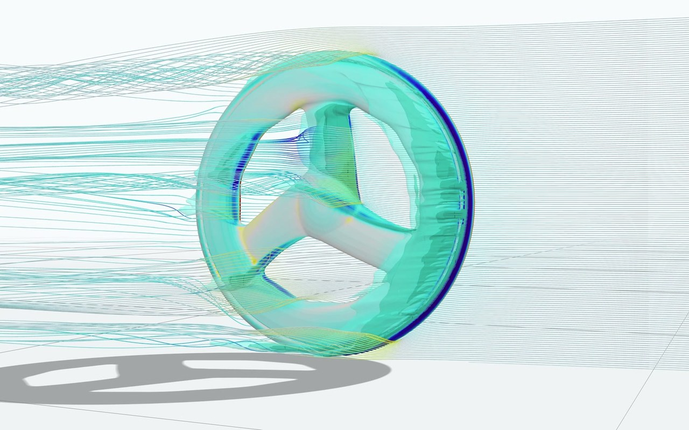
Parametric Rim Aerodynamics
Parametric CAD and CFD used to reduce triathlon wheel drag across the crosswind conditions riders see in a race.
Read more →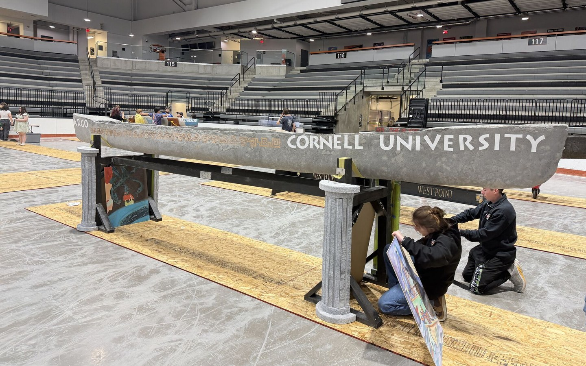
Cornell Concrete Canoe
Mold sub-team work: in-house hot-wire fabrication of the 2026 canoe mold with a sectioned center for demolding, and hull CFD and reusable mold development for the 2026–27 canoe.
Read more →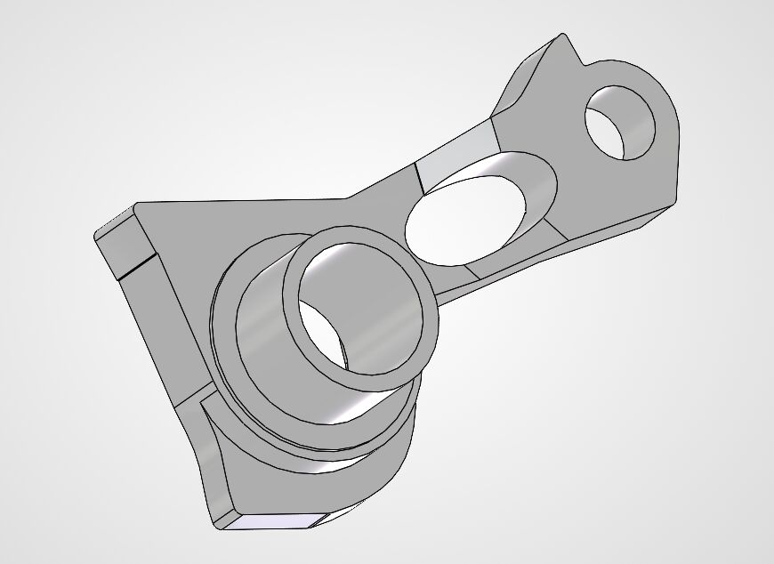
Derailleur Hanger Replicas
Reverse-engineered Shimano and SRAM UDH derailleur hangers, 3D printed and fitted to an existing bike.
Read more →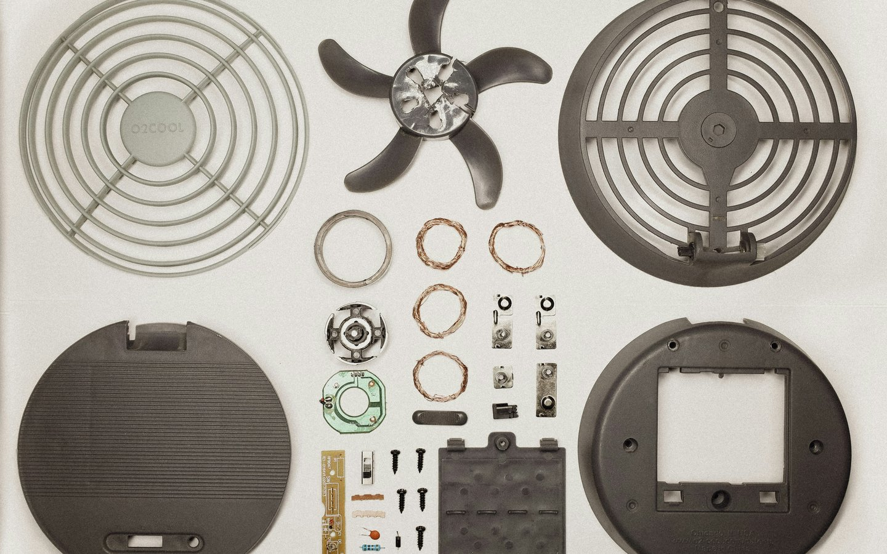
BrokePart
Mobile application that identifies a broken or missing component from a photograph and provides repair instructions, replacement-part options, or a printable CAD part.
Read more →Fluid-Mechanical Dissection
Dissection of an everyday device to explain the fluid mechanics underpinning how it works, presented through video. In progress.
Read more →Additional work
Micro-Roughness Surfaces
Literature review of distributed micro-roughness (DMR) coatings, which can reduce drag on streamlined bodies by lowering skin friction.
Cornell Lightweight Crew
For five and a half years, I've spent a few hours most Mondays through Saturdays placing a blade in the water and moving in sync with seven others. That time away from screens, school, friends, and even family gives me space to focus, reflect, breathe, and push my body and mind. To me, rowing is doing something uncomfortable so often that it becomes normal, teaching me to accept discomfort whenever it is presented.
I've been lucky to experience the full range of what this sport has to offer, from cold early mornings to spectacular sunsets over Cayuga Lake. I found a part of my day worth sacrificing everything else for, because it holds a balance of effort and satisfaction.
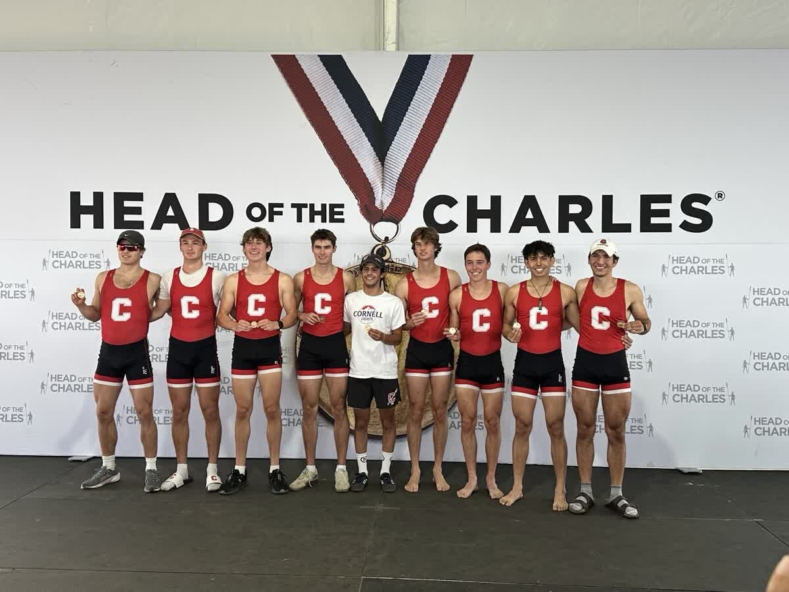
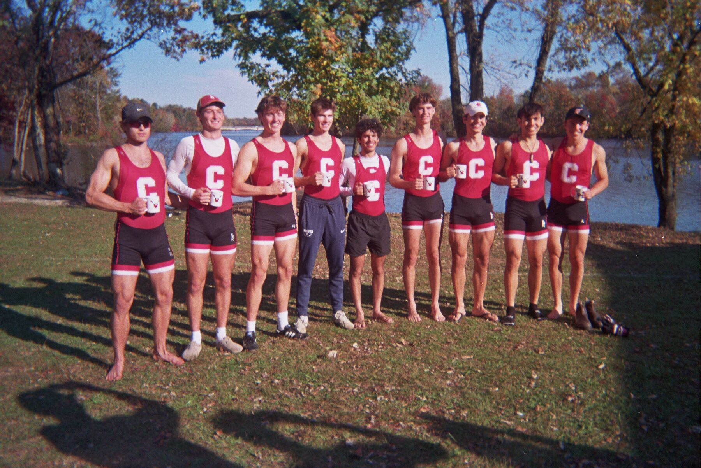
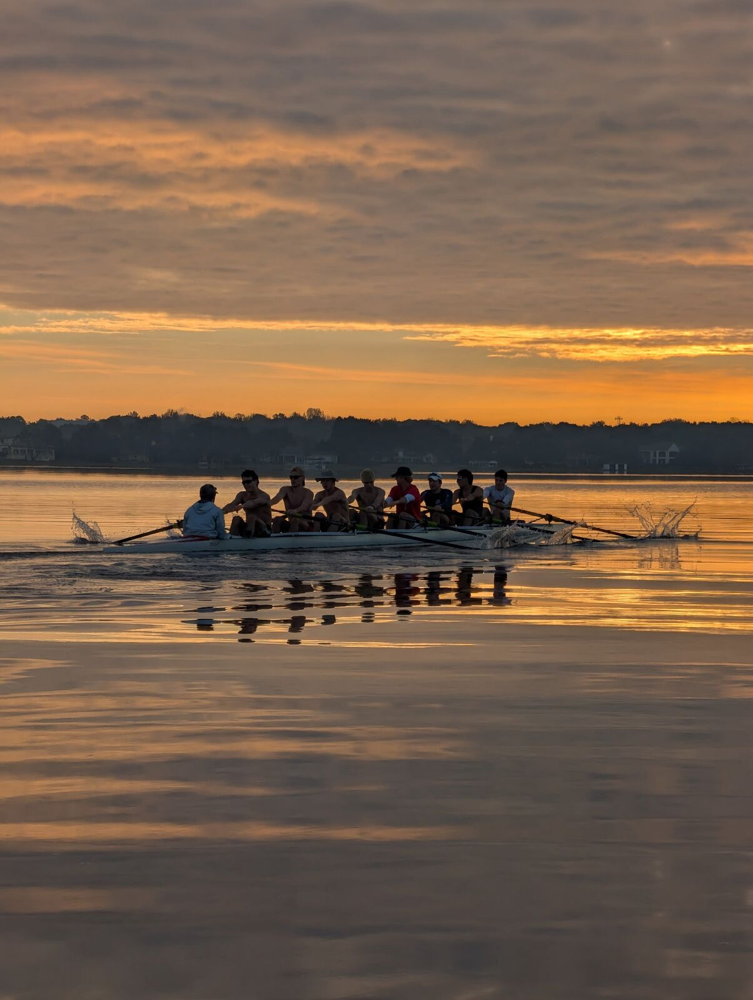
About Me
I'm passionate about aerodynamics, precision design, and data-driven engineering. My interest started with my mom, who always pushed me to figure out how the everyday things around me worked. That curiosity stuck. I still love understanding how things work and finding better ways to build them, and I get real satisfaction from taking a system or an everyday process and making it better.
I'm also interested in how AI can speed up engineering work. Through my work with AfterQuery and Handshake AI, I've gotten a close look at how these models reason and how they can be applied to technical problems.
Outside of engineering, I look for experiences that challenge me and push me into new territory. That has meant learning the drums, skiing, scuba diving, running ultramarathons, DJing, and backpacking.
At Cornell, I'm on the mold sub-team of Cornell Concrete Canoe, where I model hull and mold geometry and help build the foam mold for our 20 ft competition canoe. This past summer I interned at Princeton Carbon Works, running parametric CFD studies on carbon triathlon wheel rims.
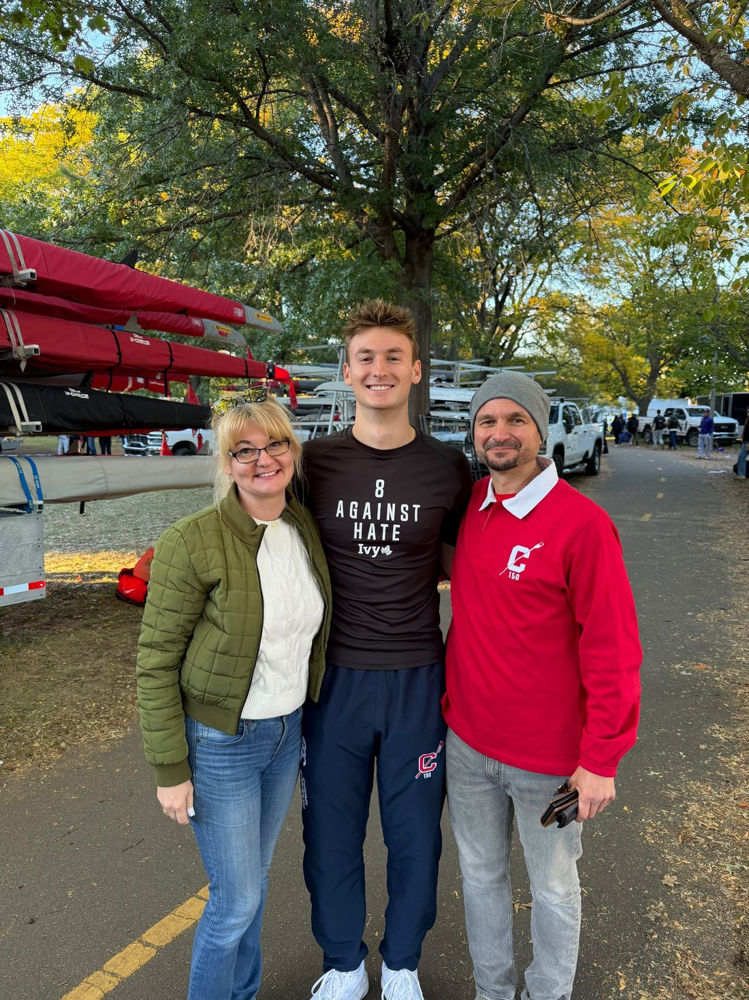
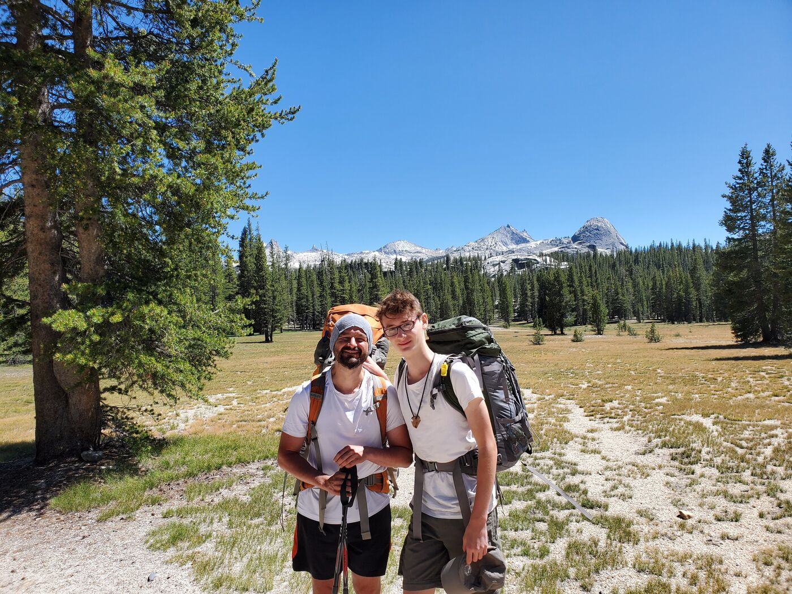
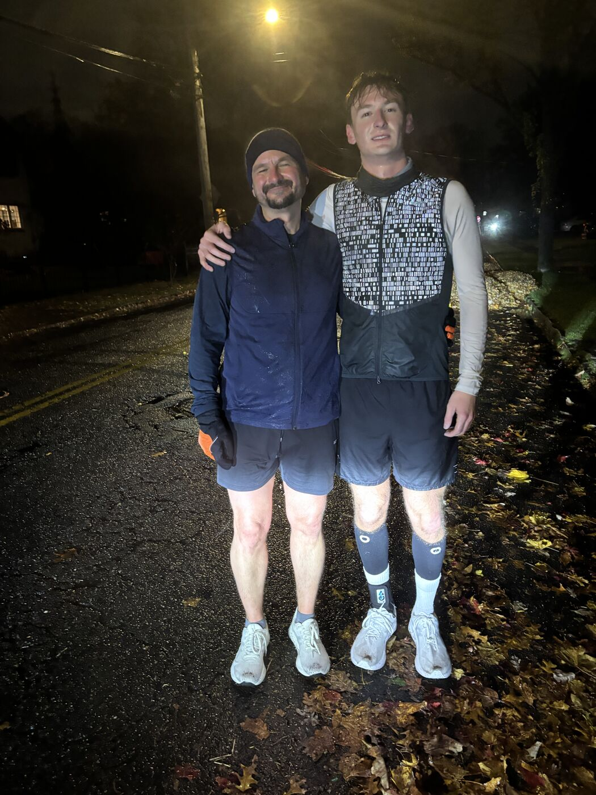
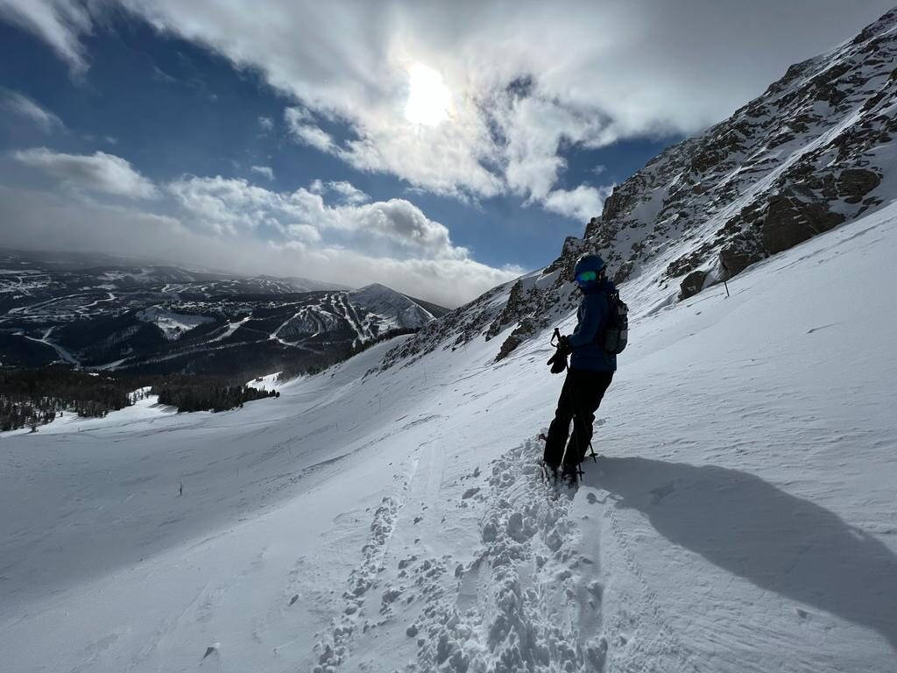
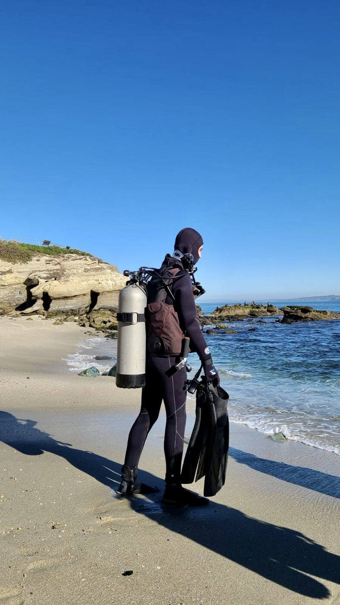